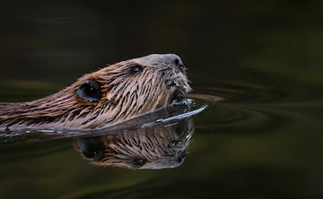
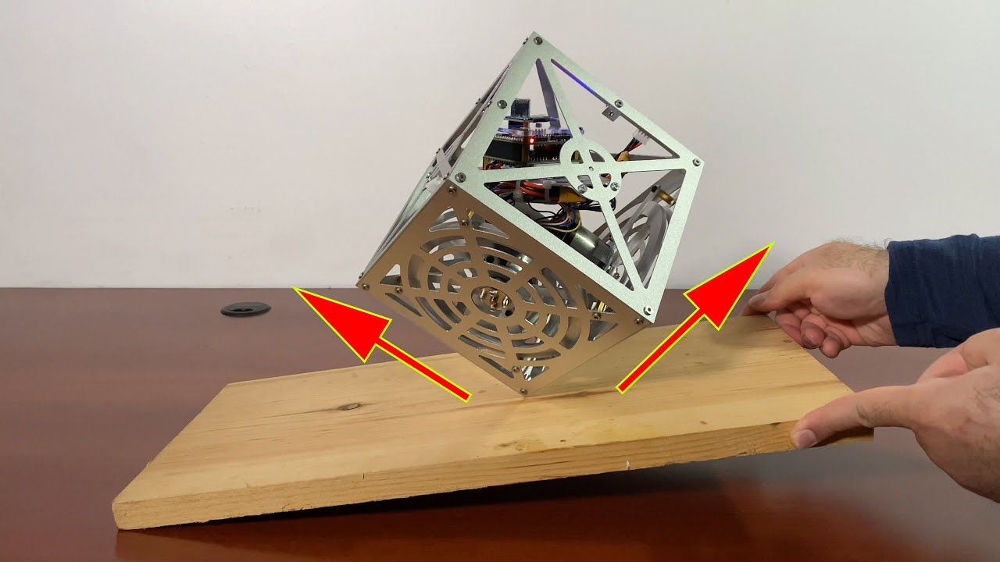

<br>
## Final Project Ideas
The assignment for this week is to brainstorm final project ideas. I have come up with the following three ideas as potential final projects for the course.
#### Environmental Sensing Hardware
Yes it is probably taking the "easy" route to go with the same topic I've been researching for several years now, but I would love to make some sort of environmental sensing hardware. Rather than focusing on something for urban use, as much of my research has done, I'd like to focus on something suited for more remote areas. One idea in this space is related to Nathan's work with Indigenous groups in Montana. Nathan suggested perhaps making a robust solar-powered data logger or a sensing system to track beavers, especially when moving through the water. Another idea in this space is to start thinking ahead to my future postdoc position and design sensing hardware for wild rice monitoring in coastal wetlands areas. In particular, I'm interested in winterized sensing - monitoring snow depth, having hardware last through winter months, etc.

#### Cool Wearable Device
After seeing that we could make flexible circuits -- and also because wearables are super cool -- I am interested in making a wearable device. However, I'm not sure what it would be monitoring or outputting.

#### Knitting Machine
I love knitting and fiber arts in general but have recently had trouble enjoying this hobby due to inflammation from the development of a chronic autoimmune disease. Existing knitting machines optimize for quick knitting and small radii projects, such as socks. I would love to instead make a machine that works more slowly, but can do different types of stitches and work on larger radii projects.
#### More Robust Smart Pill Machine
Building on prior student Linden Schrage's project, I could make a smart pillbox that works for 7 days of pills and also determines if pills were taken by maybe checking the weight of each pill container to see if there are pills present.